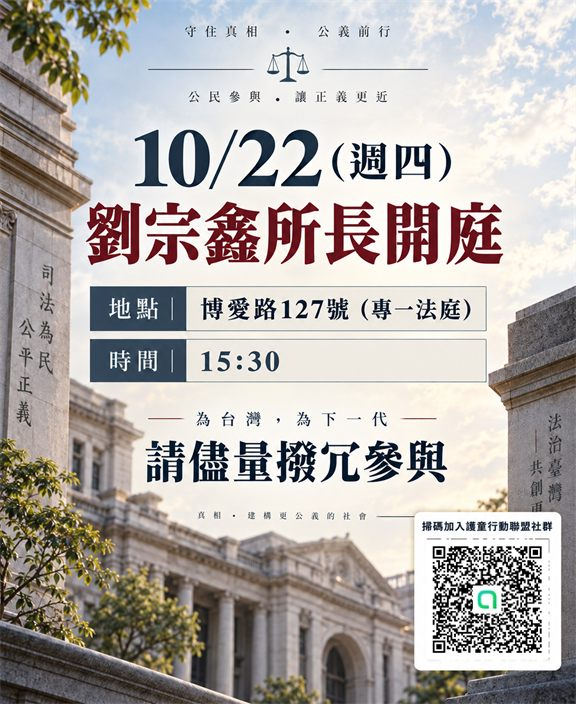

劉宗鑫所長の公判・傍聴の呼びかけ
台湾と次の世代のために、可能な方はぜひご参加ください。

司法手続は尊重されるべきであり、子どもの権利と公的責任も継続して可視化される必要があります。児童保護、制度上の責任、公正な司法に関心を持つ皆さまに、法廷秩序を妨げない範囲で見守りに参加いただければ幸いです。
傍聴は裁判を妨害するためではありません。子どもの安全、制度の説明責任、司法の透明性を社会が重視していることを、穏やかで理性的かつ毅然と示すものです。法廷の厳粛さを守り、保安検査、傍聴、撮影に関する規則をお守りください。
実際の期日、法廷、入場規則は当日の裁判所公告を基準とします。出発前に必ず再確認してください。
子ども保護行動連盟のコミュニティに参加
「子ども保護行動連盟」LINEコミュニティへのご招待です。ポスターのQRコードを読み取るか、以下のリンクからご参加ください。
LINEコミュニティに参加https://line.me/ti/g2/0P5NIUSmC4jRXC5aQrgIIfRywBptTBuyhyhmYg?utm_source=invitation&utm_medium=link_copy&utm_campaign=default